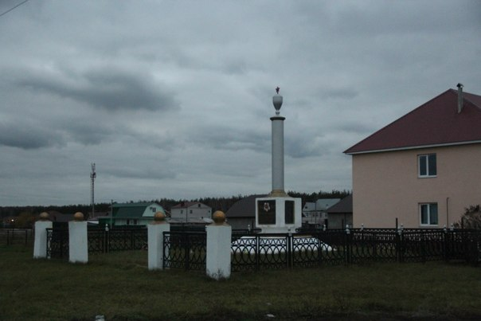

Места нашей области, посвящённые Великой Победе
 Домой
Домой
Памятник односельчанам (Село Малей)
Памятник в Малее Грязинского района односельчанам, погибшим в годы Великой Отечественной войны.
Памятник воздвигнут по инициативе уроженца села Малей, ветерана ВОВ полковника в отставке Меринова Павла Ивановича по его эскизам.
Изображения:
